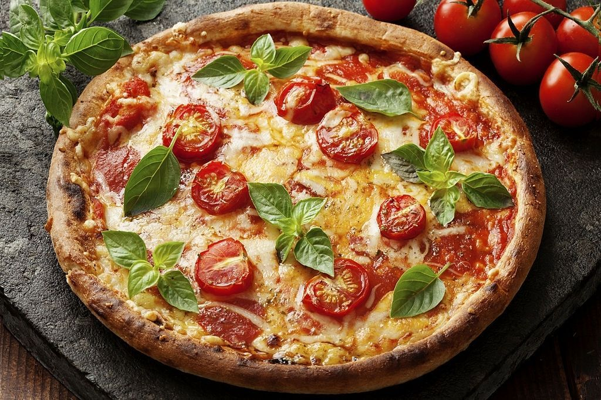

Bem-vindo à nossa Trattoria!
Localizada no coração de Setúbal, a Trattoria Bella Italia é o lugar perfeito para saborear pratos italianos autênticos. Cada refeição é uma verdadeira experiência de sabores frescos e tradicionais, preparados com ingredientes de qualidade.
O que oferecemos:
Pratos Principais

Experimente a verdadeira pizza italiana, com ingredientes frescos e receitas tradicionais.
Sobremesas

Termine a sua refeição com uma das nossas deliciosas sobremesas típicas, como o tiramisu.
Menu Completo
Descubra o nosso menu completo com pratos clássicos da culinária italiana.
Visite-nos em Setúbal!
Estamos localizados na Rua da Maçaroca 12, 2825-027 Trafaria. Venha desfrutar de uma verdadeira experiência italiana.